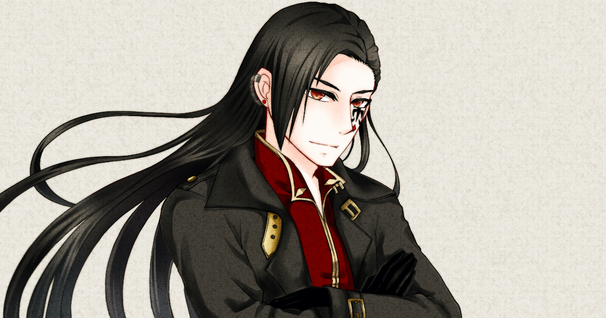

演じるにあたって
２．主要キャラクターのイメージはサイトTOPよりご覧いただけます。
３．サンプルのご送付先は担当者とご決定ください。

性別男性、数千歳
神代から生き続ける魔王。 この世界で最も強く神すら届かない力を持つ。
戦争では人間に大敗し、終戦間際に最愛の人を失う。
茫然自失となった彼は、世界をただ旅する流浪人となる。
１：道を歩いていて女の子にぶつかられて、謝られた後。
「すまぬ、避けることができなかった。怪我がなさそうでよかった。では、これで。」
２：亡くなった最愛の女性の部屋を訪れて
「なぜ私は、これだけの力がありながら。これだけの知恵がありながら、君を守れなかったのだ！いつだって、、、なぜ私は、、、守るとは、力とは、なんなのだ・・・。私のこのような知恵など！この部屋にある君の宝物にも及ばぬグズである！なぜこんなにも私は惨めなのだ！なぜ！！ 」
３：戦地にて、人族の長を前に
「ほう。その薄ら笑いを今に剥がしてくれる！もの共！魔王の気を受け取ると良い！・・・して、ついてくるのだ！私は、私たちは帰らねばならぬ！！誰一人として、死なせはせぬ！！」
４：演劇へ出演するヴォルカス。心配する我が子に向かって。
「では、私も、演者の一人なのでな。イーラよ、私が、ふむ。タコのようになっていないか、しかとみておくと良い。」

性別女性、１１歳
人と魔王の間に生まれた半魔の娘。
祖母のエリスと共に、小さな街に暮らしている。
持ち前の性格で常に明るく振る舞っているが、 魔族の娘のため周囲から距離を置かれ、孤独を感じながら育ってきた。
１：お風呂上りに
「ばあば！お風呂あがったよー！い！？なんで昼間のおじさんがいるのよ！ここ私の家よ！
・・・ね、狙ったでしょう！この変態！このぉ！」
２：母からの応援の手紙を読んだ後で
「ぐす・・・うっ・・・うっ・・・ばあばあああ！ごめんなさい！ばあば！私！ヴェルと旅がしたい！私！いろんなもの、みてみたいの！」
３：目隠しをされて展望台へ。目の前の街の美しさに感動する
「ふぁ！まぶし・・・ほえ・・・！？わあー・・・・！すごい、すごーい・・・・おっきいー・・・・。わあぁーーー・・・・。・・・こんなにおっきな街があるんだぁ・・・。・・・わわ！見て！車が街を走ってるよ！」
４：夕焼けに黄昏ている場面。友達から母を殺めたことを謝られて
「何？オレンド。・・・。いいよ。私、オレンドのことも大好きだから。」